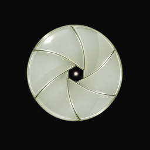

Privacy Policy
Effective November 1, 2026
What stays on your iPhone
- Places and sessions: the places you save (name, coordinates, radius) and your session history, used for the block and for your statistics.
- Unlock code: only a salted fingerprint (hash) of your code, kept in the iOS Keychain. The code itself is never stored.
- Settings: your preferences, block profiles and chosen color.
This data is stored in the app and its extensions on your device. It is not sent to us or to anyone else. Deleting Locus deletes it.
Location
Locus uses your location to know when you leave the place where a session started (and, if you turn it on, when you arrive at a saved place). This check runs on your iPhone through Apple's location services. Your location is never transmitted by Locus.
Screen Time
Locus uses Apple's Screen Time (Family Controls) framework to block the apps you choose. Apple only gives Locus anonymous tokens for those apps; Locus cannot see which apps they are, how you use them, or your browsing.
Camera
The camera is used only to scan your unlock card while the scanner is open. No images are saved or sent.
Notifications
Notifications are created on your iPhone (for example, when you are free to leave). Locus does not use push servers.
Purchases
Locus Pro is sold through Apple's App Store. Apple processes the payment; Locus only receives confirmation that your subscription is active and never sees your payment details.
Children
Locus does not knowingly collect data from anyone, including children.
Changes
If this policy changes, the new version will be posted on this page with a new effective date.
Contact
Questions: gianlucalwdm@gmail.com